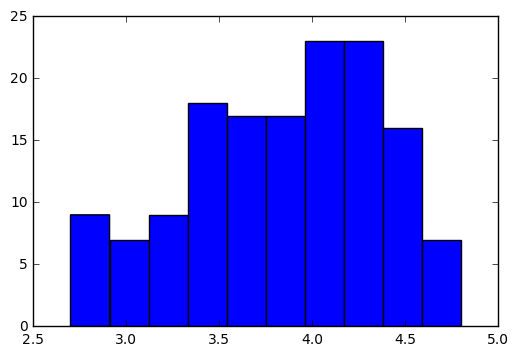
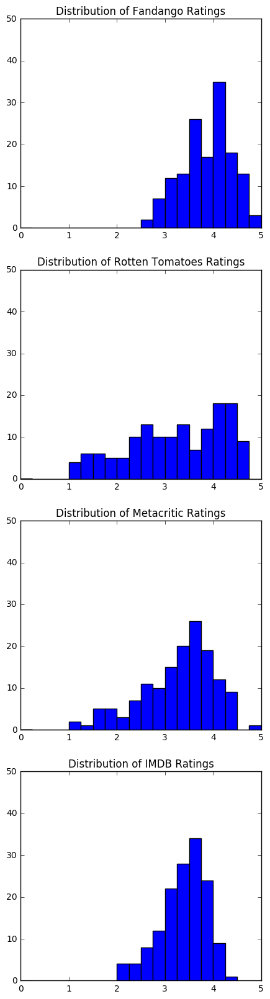
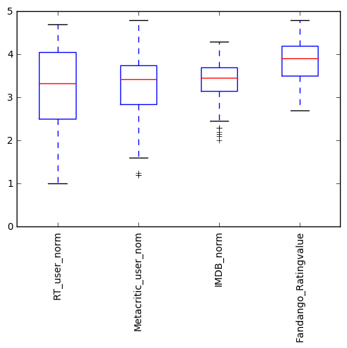

matplot的使用之三:直方图、盒形图
Page content
import pandas as pd
import matplotlib.pyplot as plt
reviews = pd.read_csv('fandango_scores.csv')
cols = ['FILM', 'RT_user_norm', 'Metacritic_user_nom', 'IMDB_norm', 'Fandango_Ratingvalue']
norm_reviews = reviews[cols]
print(norm_reviews[:5])
FILM RT_user_norm Metacritic_user_nom \
0 Avengers: Age of Ultron (2015) 4.3 3.55
1 Cinderella (2015) 4.0 3.75
2 Ant-Man (2015) 4.5 4.05
3 Do You Believe? (2015) 4.2 2.35
4 Hot Tub Time Machine 2 (2015) 1.4 1.70
IMDB_norm Fandango_Ratingvalue
0 3.90 4.5
1 3.55 4.5
2 3.90 4.5
3 2.70 4.5
4 2.55 3.0
fandango_distribution = norm_reviews['Fandango_Ratingvalue'].value_counts()
fandango_distribution = fandango_distribution.sort_index()
print(fandango_distribution)
2.7 2
2.8 2
2.9 5
3.0 4
3.1 3
3.2 5
3.3 4
3.4 9
3.5 9
3.6 8
3.7 9
3.8 5
3.9 12
4.0 7
4.1 16
4.2 12
4.3 11
4.4 7
4.5 9
4.6 4
4.8 3
Name: Fandango_Ratingvalue, dtype: int64
fig, ax = plt.subplots()
# ax.hist(norm_reviews['Fandango_Ratingvalue'],bins=10,range=(2,5))
ax.hist(norm_reviews['Fandango_Ratingvalue'])
plt.show()

fig = plt.figure(figsize=(5,20))
ax1 = fig.add_subplot(4,1,1)
ax2 = fig.add_subplot(4,1,2)
ax3 = fig.add_subplot(4,1,3)
ax4 = fig.add_subplot(4,1,4)
ax1.hist(norm_reviews['Fandango_Ratingvalue'],20,range=(0, 5))
ax1.set_title('Distribution of Fandango Ratings')
ax1.set_ylim(0, 50)
ax2.hist(norm_reviews['RT_user_norm'], 20, range=(0, 5))
ax2.set_title('Distribution of Rotten Tomatoes Ratings')
ax2.set_ylim(0, 50)
ax3.hist(norm_reviews['Metacritic_user_nom'], 20, range=(0, 5))
ax3.set_title('Distribution of Metacritic Ratings')
ax3.set_ylim(0, 50)
ax4.hist(norm_reviews['IMDB_norm'], 20, range=(0, 5))
ax4.set_title('Distribution of IMDB Ratings')
ax4.set_ylim(0, 50)
plt.show()

fig, ax = plt.subplots() ax.boxplot(norm_reviews[‘RT_user_norm’]) ax.set_xticklabels([‘Rotten Tomatoes’]) ax.set_ylim(0, 5) plt.show()
num_cols = ['RT_user_norm', 'Metacritic_user_nom', 'IMDB_norm', 'Fandango_Ratingvalue']
fig, ax = plt.subplots()
# print(norm_reviews[num_cols])
# dtypes Return the dtypes in this object.
# values Numpy representation of NDFrame
ax.boxplot(norm_reviews[num_cols].values)
ax.set_xticklabels(num_cols, rotation=90)
ax.set_ylim(0, 5)
plt.show()
